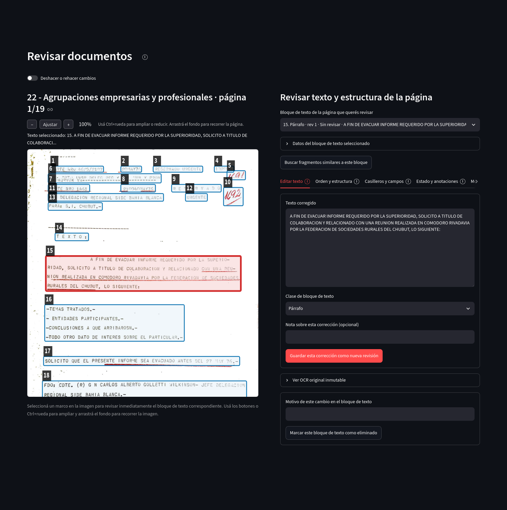
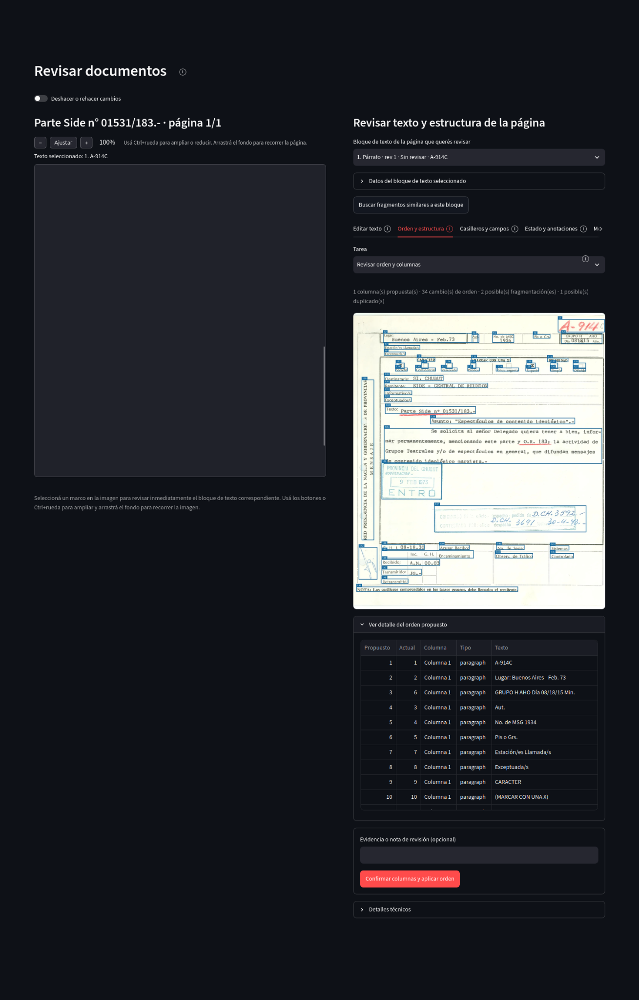

Organización y revisión
Revisar documentos
La revisión combina la imagen de la página con bloques de texto editables. Un bloque de texto es una parte delimitada de la página, por ejemplo un párrafo, un título o un encabezado. Seleccionar un marco sobre la imagen abre el mismo bloque en el panel de revisión.
Edición de texto
Editar texto permite corregir el contenido, cambiar la clase del bloque y guardar una nueva revisión. El OCR original permanece disponible para consulta. El botón Buscar fragmentos similares a este bloque envía el texto del bloque a la búsqueda semántica.
{kind=link}

Abrir captura completa
Orden y estructura
Esta pestaña revisa la propuesta de orden de lectura y la organización en columnas. La propuesta automática puede confirmarse después de compararla con la página.
{kind=link}

Abrir captura completa
Casilleros y campos
En páginas con formularios pueden aparecer posibles casilleros detectados. Cada casillero se confirma con un estado, un rótulo y, cuando corresponde, un grupo.
Estado y anotaciones
El bloque puede tener un estado de revisión, etiquetas y comentarios. Estas anotaciones describen el trabajo sobre el texto y quedan separadas del contenido textual mismo.
Menciones de entidades
Una mención es una aparición concreta de un referente dentro del texto. Puede vincularse con una ficha existente de Entidades y menciones o registrarse sin vínculo hasta que se resuelva su identidad.
Datos adicionales
Algunos motores de procesamiento conservan datos estructurados de procedencia, como etiquetas de origen, orden de lectura o confianza de la extracción. Se muestran separados del texto editable.
Historial general
El historial reúne importaciones, correcciones, cambios de estado y otras operaciones de la página o del bloque seleccionado. Cuando existen revisiones anteriores, pueden consultarse y restaurarse mediante las acciones correspondientes.
Deshacer y rehacer
El control Deshacer o rehacer cambios trabaja sobre las revisiones registradas. El historial anterior se conserva; deshacer no borra de manera silenciosa la procedencia de una modificación.